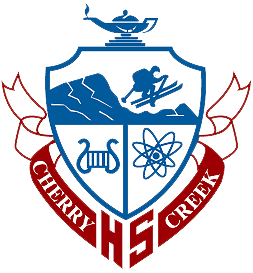
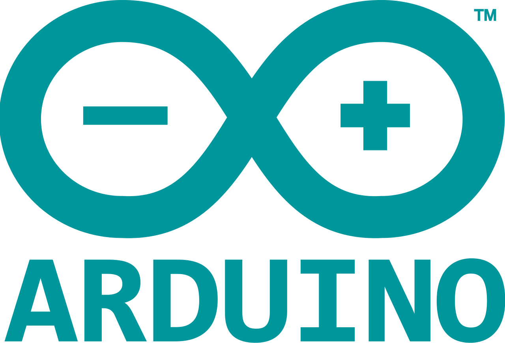

High School Class Scheduling Software
I spent the better part of my years in high school working on a commercial-scale project which managed classroom, teacher, and student scheduling for a high school of 3600 students. The project was built around a proprietary depth-first-search-based machine learning algorithm. After years of development and deployment, the program built a complete schedule for CCHS for the 2015-2016 school year with a ten-fold decrease in scheduling conflicts from past schedules.

WikiBooks Search Engine
As part of a data structures course at SMU, I built a search engine in C++ which can parse a 1GB WikiBooks XML dump into an inverted file index in under 90 seconds and allows for lookup of individual words or multi-word queries using binary operators.


SSh over SMS - HackRice 2016
While attending my first ever hackathon, I built an SSh over SMS system featuring two-factor authentication over the course of 36 hours. The project was a finalist and won best first-time hack, and was featured by DevPost. A video demo, as well as the project source, can be found on DevPost.


Arcade-Style iOS Game
As a fun side project in high school, I built a small iOS puzzle/arcade game with a friend. The game includes GameCenter integration and uses Apple's new Swift Language. The app, called Sort, is available on the App Store.


Motion Capture Pong Game
My first non-Hello-World project, which I wrote in 6th grade, was an implementation of pong in Processing which used motion capture from a computer's webcam to control paddle movement using hand motions of a user.

2D and 3D Game/Graphics System
Over the years, I've built a handful of games in Java and C++ using Unity, SDL and LWJGL. An example of a proof-of-concept for a Java game can be found on my GitHub page.


Text Message Based Physics Assistant
Over the summer after my senior year of high school, I built a physics word problem solver and integrated it with a texting system that I built on my Linux server. The complete system can analyze physics word problems sent over text message and send a response with the answer(s) to the problem. A simplified but functioning proof-of-concept version can be found on my GitHub page.
Interdisciplinary Autonomous Robot Project
I led a team of 6 other engineering students to design and build an autonomous robot which navigated a playing field and gathered environmental data such as ground water concentration, wind speed, and temperature using custom-built sensors. Our team won first place in a competition of 16 teams.

Automatic Book Indexer
As part of a data structures course at SMU, I built an automatic book indexer with custom-built mutable list data structures without any use of the C++ SDL.
Automatic Anti-Texting-and-Driving System
During my senior year of high school, I was hired to build an integrated Arduino-Android system which automatically detects any input activity on an Android device and sends a bluetooth signal to the Arduino which in turn can trigger a car alarm to dissuade use of cell phones while driving. I both designed and built the Android and Arduino apps and wired an Arduino circuitboard to receive Bluetooth signals and trigger the car alarm.

My Personal Website
I wrote this website! It was my first ever project using HTML and CSS, and its source code (which is not particularly impressive) can be found on my GitHub page.

Lunar Lander Android Game
In middle school, I built a basic lunar lander game in Processing for Android and published the project to the Google Play store. I have since removed the project from the Google Play store, but its source code can be found on my GitHub page.